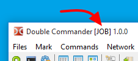

Beim Start der Double-Commander-Programmdatei können wir Befehlszeilenparameter angeben, um den Start anzupassen.
Zum Beispiel können wir die Verzeichnisse festlegen, die in den Dateipanels angezeigt werden.
Außerdem gibt es einige Schalter, die wir verwenden können.
Diese Schalter unterscheiden NICHT zwischen Groß- und Kleinschreibung.
Kurz zusammengefasst sieht die mögliche Syntax der Befehlszeile so aus:
doublecmd.exe [-C] [-T] [-P L|R] [path1\subpath1] [path2\subpath2]
Eine alternative Form ist ebenfalls möglich:
doublecmd.exe [-C] [-T] [-P L|R] [-L path1\subpath1] [-R path2\subpath2]
Hinweis: Die Befehlszeile unter macOS hat eine Besonderheit. Den Befehl open mit dem vollständigen Programmnamen verwenden („Double Commander“ mit -a) und Parameter über --args übergeben. Für die zweite und jede weitere Instanz -n hinzufügen.
Das ist die Liste der Parameter, die beim Start von Double Commander vorkommen können.
| Befehlszeilenparameter | |
|---|---|
| Parameter | Beschreibung |
path1\sub1 [path2\sub2] (keine Schalter, direkt ein Pfad) |
Wird ein Pfad übergeben, wird er in das aktive Panel geladen. Werden zwei Pfade übergeben, kommt der erste ins linke Panel und der zweite ins rechte Panel. Verzeichnisnamen mit Leerzeichen müssen in doppelte Anführungszeichen gesetzt werden. Immer den vollständigen Pfad angeben. |
-C oder --client | Wenn Double Commander bereits läuft, diese Instanz aktivieren und die Pfade aus der Befehlszeile an sie übergeben. |
-L Verzeichnis | Verzeichnis festlegen, das im linken Panel angezeigt wird. |
-R Verzeichnis | Verzeichnis festlegen, das im rechten Panel angezeigt wird. |
-P L|R | Legt das aktive Panel beim Programmstart fest:
|
-T | Öffnet die übergebenen Verzeichnisse in neuen Registerkarten. |
--config-dir=Pfad | Eigenes Verzeichnis mit den Konfigurationsdateien von DC festlegen. |
--servername=x |
Legt den Namen der DC-Instanz (des Servers) fest, über den danach Parameter übergeben werden können. Gibt es noch keine Instanz, wird sie erzeugt. Gibt es bereits eine Instanz und die aktuelle ist ein Client, werden die Parameter an den Server gesendet (also an die bestehende Instanz). Gibt es bereits eine Instanz und die aktuelle ist kein Client (das heißt, Nur eine Kopie von DC gleichzeitig erlauben ist aus und es wurden keine Optionen --client/-c angegeben), wird der angegebene Servername verändert: zuerst wird einfach eine nachgestellte Zahl „2“ angehängt.Ist bereits eine nachgestellte Zahl vorhanden, wird sie um 1 erhöht, bis ein Servername gefunden ist, der noch nicht belegt ist. Danach wird die Instanz mit diesem Servernamen erzeugt. |
--no-splash | Schaltet den Startbildschirm beim Start von DC aus. |
--debug-log=Datei |
Double Commander starten und die Debug-Ausgabe in die angegebene Datei schreiben. Das verwendete Modul (Lazlogger) unterstützt außerdem die Umgebungsvariable xxx_debuglog, wobei xxx der Programmdateiname ohne Erweiterung ist:
in diesem Fall also doublecmd_debuglog. Existiert diese Umgebungsvariable, wird die in ihrem Wert angegebene Datei verwendet.Unter Linux ist es vorzuziehen, das Programm in einem Terminal zu starten und die Ausgabe in eine Datei umzuleiten (beide Ströme, stdout und stderr). |
Hinweis: Wird statt eines Verzeichnisses ein vollständiger Dateiname angegeben, öffnet Double Commander den Ordner und setzt den Cursor auf diese Datei.
Einige Beispiele für gewünschtes Verhalten, das sich beim Start von Double Commander über Befehlszeilenparameter erreichen lässt.
Das Verzeichnis e:\Xilinx\ISE DS im linken Panel und das Verzeichnis c:\temp im rechten öffnen:
doublecmd.exe "e:\Xilinx\ISE DS" c:\temp
Das Verzeichnis c:\Logs in einer neuen Registerkarte im aktiven Panel einer bereits laufenden Instanz von Double Commander öffnen:
doublecmd.exe -c -t c:\Logs
Das Programm mit Konfigurationsdateien aus dem Verzeichnis f:\Documents\DC\Job Settings starten und in der Titelleiste den Zusatz JOB anzeigen:
doublecmd.exe --config-dir="f:\Documents\DC\Job Settings" --servername="JOB"
